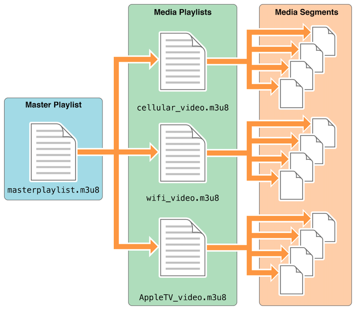

Go to Github Home Page 流媒体主要有两种应用场景，即直播和点播： 直播：服务端实时发送直播来源（如系统桌面、摄像头）的数据流，客户端通过支持流媒体协议的播放器实时播放同样的内容，不可拖动进度。 点播：服务端存放多个视频文件，客户端可通过网路点播客户端任意观看其中一个视频，并可拖动进度进行观看。 流媒体技术能提供诸如视频加密和播放体验大幅提升等优点。 协议的选择流媒体播放有两种协议可供选择：HLS 和 RMTP。 HLS，是苹果公司实现的基于 HTTP 的流媒体传输协议，全称 HTTP Live Streaming，可支持流媒体的直播和点播，主要应用在 iOS 系统，为 iOS 设备（如 iPhone、iPad）提供音视频直播和点播方案。 RTMP，实时消息传输协议，Real Time Messaging Protocol，是 Adobe Systems 公司为 Flash 播放器和服务器之间音频、视频和数据传输开发的开放协议。协议基于 TCP，是一个协议族，包括 RTMP 基本协议及 RTMPT/RTMPS/RTMPE 等多种变种。RTMP 是一种设计用来进行实时数据通信的网络协议，主要用来在 Flash/AIR 平台和支持RTMP协议的流媒体/交互服务器之间进行音视频和数据通信。 在web点播业务中选用HLS协议，两种协议的详细介绍和选择HLS的原因会在下文给出。 HLS协议HLS协议规范文档如下： https://tools.ietf.org/html/rfc8216 。 HLS 数据通过 HTTP 协议传输，在H5中可以很容易得到支持，具有良好的兼容性。HLS 的基本原理就是将视频分割为多个TS格式的文件片段存储在服务器，同时需要建立一个 m3u8 的索引文件来维护所有的 TS 片段的索引。客户端播放视频时，它是从 m3u8 索引文件获取 TS 视频文件片段来播放。相对于常见的流媒体播放协议，例如 RTMP 协议、RTSP 协议等，HLS 最大的不同在于直播客户端获取到的并不是一个完整的数据流，而是连续的、短时长的媒体文件，客户端不断的下载并播放这些小文件。每个 TS 文件的时长并无强制规定，可以根据需求自由分割，推荐是 5-10 秒一个分片。 值得一提的是，由于 HLS 的分段策略，如果应用于直播，则理论最小延时为一个 TS 文件的时长，一般情况为 2-3 个 ts 文件的时长，通常 HLS 在直播场景可能的延时会达到 20-30s，而高延时对于需要实时互动体验的直播来说是不可接受的。这就意味着，如果直播过程中需要双向互动，则HLS不太适合。当然，对于点播来说，则无需考虑上述问题。 HLS 使用短时长的分片文件来播放，客户端可以平滑的切换码率，以适应不同带宽条件下的播放。 HLS原理示意图如下：  RTMP 协议相对于 HLS 来说，采用 RTMP 协议时，对于直播场景，从采集推流端到流媒体服务器再到播放端是一条数据流，因此在服务器不会有落地文件。相对来说，延时较小，通常为 1-3s，参考播放器 如ijkplayer、毫秒级的播放器，可以参考大牛直播SDK的RTMP播放器。 因此业界大部分直播业务都会选择用 RTMP 作为流媒体协议。 但是RTMP也有一些问题需要解决，浏览器无法原生支持该协议，如要在web中应用，就需要开发支持相关协议的播放器。因此该协议多应用 native 环境。 综上，针对点播业务场景，HLS显然是最合适的选择。 m3u8文件格式详解一个完整的 m3u8 视频文件下载地址：m3u8示例文件下载 。 m3u8 文件本质上是一个文本文件，下载上述示例文件，并用文本编辑器打开，内容如下(部分)： 123456789101112#EXTM3U#EXT-X-VERSION:3#EXT-X-TARGETDURATION:15#EXT-X-MEDIA-SEQUENCE:0#EXT-X-PLAYLIST-TYPE:VOD#EXT-X-KEY:METHOD=AES-128,URI="https://xxxx/enc.key",IV=0xc5bc939e48a0f1630bf0dc84016be5b6#EXTINF:14.000000,https://xxxx/0d3152cc31fdaea1739353417a829734_4-000.ts#EXTINF:8.720000,https://xxxx/79dc1b62f6ba55a7a4b65869d4f1fae6_4-001.ts#EXTINF:10.000000,... m3u8 用 UTF-8 编码, 实质是一个播放列表（playlist）, 其内部信息记录的是一系列媒体片段资源，顺序播放该片段资源，即可完整展示多媒体资源。对于点播来说，客户端只需按顺序下载上述片段资源，依次进行播放即可。而对于直播来说，客户端需要定时重新请求该 m3u8 文件，看下是否有新的片段数据需要进行下载并播放。 需要注意，m3u8文件本身及TS文件，均需保证与当前域一致或者目标服务器能够支持当前域跨域。 如何快速制作 m3u8 文件可以用命令行工具 ffmpeg，将普通的 MP4 视频文件转为 m3u8。示例如下： 12ffmpeg -i test.ts -c copy -map 0 -f segment -segment_list video/index.m3u8 -segment_time 2 video/nxb-%04d.ts 关于 ffmpeg 的安装及详细手册，参考 http://ffmpeg.org/ 。 流媒体加密为什么要加密视频加密主要是为了保护视频版权，防止视频被录制并非法传播。 通常加密可以让被保护的视频不能轻易被下载，即使下载了也是加密后的内容，其它人解开加密后的内容需要付出非常大的代价。 当然事实上无法严格地做到让要保护的视频不被录制，原因在于你需要在客户端播放出视频的原内容，解密的流程在客户端的话不法分子就能模拟整个流程，最保守也能用屏幕录制软件录制到视频的原内容(可以通过加水印的方法缓解下)。加密可以让他获取原内容的代价更大。 流媒体加密技术原理流媒体传输协议都必须把视频流拆分成连续的小块之后再被传送，只不过分块的大小和视频容器的格式不一样而已。 流媒体加密技术的核心就在于对这每一小块视频分别使用对称加密算法，在服务端加密客户端解密，通过权限验证的用户才能拿到解密一小块视频的密钥。 可能有人会问为什么不用 HTTPS 加密，原因是 HTTPS 在网络传输层进行非对称加密，目的是为了防止中间人窃听劫持，任何人都可以和我们的服务器建立 HTTPS 链接获取到原数据。而视频加密的目的不是为了防止有中间人窃听我们的视频数据，而是要让视频数据本身被加密。 现代成熟的加密技术分为对称加密算法和公钥密码算法(非对称加密)。之所以选择对称加密是因为流媒体要求很强的实时性，数据量又很大。公钥密码算法的计算都比较复杂，效率较低，适合对少量数据进行加密。对称加密效率相对较高，所以流媒体加密首选对称加密。例如在 SSH 登入的时候会先通过公钥密码算法传输一个密钥，再用这个密钥用作对称加密算法的密钥，在数据传输过程中使用对称加密算法来提示数据传输效率。 HLS 协议的加密，整个过程是，浏览器会首先去请求 .m3u8 的索引文件，然后解析 m3u8，找出对应的 .ts 文件链接，并开始下载。 1234567891011#EXTM3U#EXT-X-VERSION:3#EXT-X-TARGETDURATION:15#EXT-X-MEDIA-SEQUENCE:0#EXT-X-PLAYLIST-TYPE:VOD#EXT-X-KEY:METHOD=AES-128,URI="http://xxxx/encrypt",IV=0xc5bc939e48a0f1630bf0dc84016be5b6#EXTINF:14.000000,https://xxxx/0d3152cc31fdaea1739353417a829734_4-000.ts#EXTINF:8.720000,https://xxxx/79dc1b62f6ba55a7a4b65869d4f1fae6_4-001.ts#EXTINF:10.000000, 上述 m3u8 文件的第 6 行，即 1#EXT-X-KEY:METHOD=AES-128,URI="http://xxxx/encrypt",IV=0xc5bc939e48a0f1630bf0dc84016be5b6 这一行信息很关键，要还原出原内容需要从这行配置中解析出获取解密密钥的URL http://xxxx/encrypt 和对称加密算法 AES-128。获取到密钥后再在客户端解密出原内容。 可以看出启用 HLS 加密后会多出更多的事情： 针对每个 TS 需要去请求获取密钥。 需要多提供一个给客户端获取密钥的鉴权服务。 针对每个 TS 需要去执行对称加密的解密计算。 这会带来更多的网络请求和计算量，可能会对延迟和性能造成一定的不良影响。 同时需要注意，服务端若要提供加密视频，须在m3u8中写入 EXT-X-KEY 字段，并提供解密秘钥服务，这里可以使用 nginx-rtmp-module 模块，此处细节不详细展开。 注意：key文件必须是二进制的文件，不能是文本文件。 关于 hls.js 库尽管HLS协议原理不算复杂，但是完全自己实现一个播放器仍然十分繁琐和容易出错。 可以借助 HLS.js 库快速地实现常见的业务功能，项目地址如下：https://github.com/video-dev/hls.js 。 在业务中的具体应用播放器技术选型：DPlayer（ http://dplayer.js.org/zh/ ）。DPlayer 相对非常轻量，文档也非常友好易读。hls.js + DPlayer 配合即可满足业务需求。 视频点播功能，包含如下隐性需求： 播放器UI在各平台各版本样式及交互能够保持一致； 页面滚动时，当视频不可见时，需要自动暂停视频； 当页面存在多个视频时，不允许多个视频同时播放（播放一个视频时，自动暂停其余视频）。要支持流媒体播放，需要同时更新李白后台管理系统和移动端代码。 李白后台管理系统使用富文本编辑器插入视频的时候，插入一个特殊的div标识，例如： 1<div class="vedio" data-source="/xxx.m3u8"></div> 移动端web进行渲染的时候，将该dom结构替换为 vedio 标签，并解析m3u8获取必要的信息，然后拉取视频资源进行播放。关键代码为： 123456789document.querySelectorAll('.vedio') .forEach(item => { const vedio = document.createElement('vedio'); const hls = new Hls(); hls.loadSource(source); hls.attachMedia(video); // ... item.append(vedio); }) 注意：之前播放视频是使用iframe对播放逻辑进行了封装，因此富文本编辑器只要插入iframe标签。iframe也是主流的做法之一，引入第三方视频时均是采用该方案，但是iframe往往加载性能也略微差一点。 要实现当视频离开可视区域时，自动暂停视频，基本实现如下： 123456789101112131415let lazyObserver = new IntersectionObserver( (entries, observer) => { entries.forEach(player => { if (!player.isIntersecting) { if (!player.paused) { player.pause(); } } }); });vedios.forEach(player => { lazyObserver.observe(player);}); 注意: IntersectionObserver 接口从 chrome51 及 safari12.1 开始受到原生支持，对于旧版本浏览器，有如何polyfill方案： https://github.com/w3c/IntersectionObserver/tree/master/polyfill 播放一个视频时，自动暂停其余视频，基本实现如下： 1234567891011vedios.forEach(player => { player.addEventListener("play", () => { vedios.forEach(item => { if (player !== item) { if (!item.paused) { item.pause(); } } }); });}) ← 上一篇 下一篇→ To show LiveRe comment, please use JavaScript 目录 1. 协议的选择1.1. HLS协议1.2. RTMP 协议1.3. m3u8文件格式详解1.3.1. 如何快速制作 m3u8 文件1.4. 流媒体加密1.4.1. 为什么要加密视频1.4.2. 流媒体加密技术原理1.5. 关于 hls.js 库1.6. 在业务中的具体应用